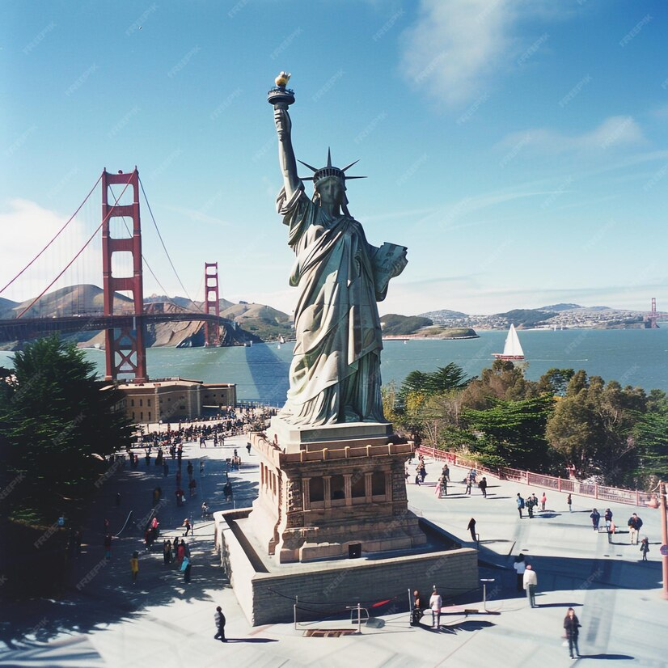
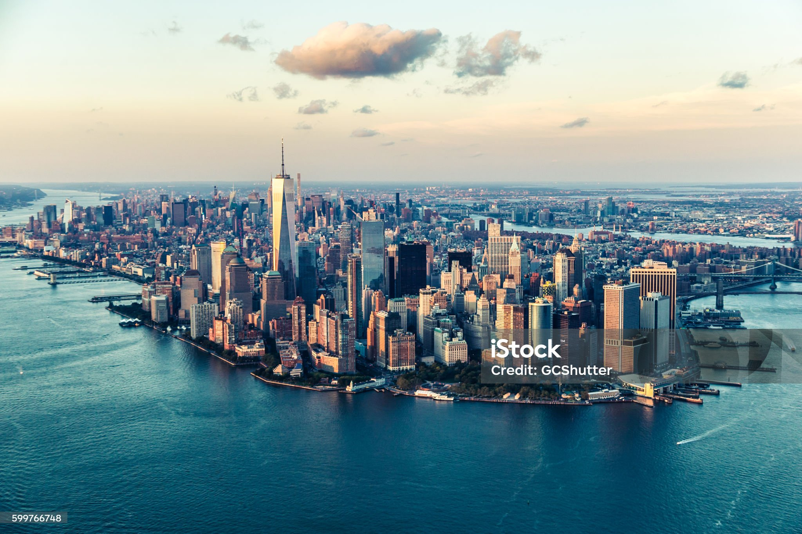
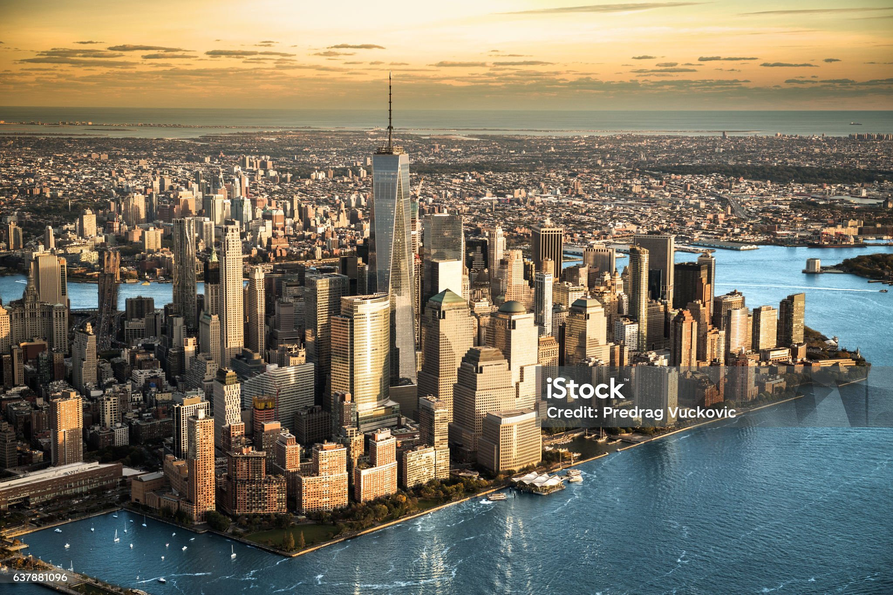

STATUE OF LIBERTY
The Statue of Liberty (Liberty Enlightening the World; French: La Liberté
éclairant le monde) is a
colossal neoclassical sculpture on Liberty Island in New York Harbor, within New York City. The
copper-clad statue, a gift to the United States from the people of France, was designed by French
sculptor Frédéric Auguste Bartholdi and its metal framework was built by Gustave Eiffel. The statue
was dedicated in the form of technology

NEWYORK CITY
New York, often called New York City[b] or NYC, is the most populous city
in the United States.
Located at the southern tip of New York State on one of the world's largest natural harbors, the
city comprises five boroughs, each coextensive with a respective county. New York is a global center
of finance[11] and commerce, culture, technology,[12] entertainment and media, academics and
scientific output,[13] the arts and fashion, and, as home to the headquarters of the .

MAHATTANS ISLAND
Manhattan is the most densely populated and
geographically smallest of the five
boroughs of New York City. Coextensive with New York County, Manhattan is the smallest county by
geographical area in the U.S. state of New York. Located almost entirely on Manhattan Island near
the southern tip of the state, Manhattan constitutes the center of the Northeast megalopolis and the
urban core of the New York metropolitan area.[6]